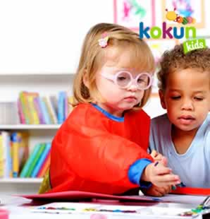
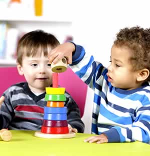
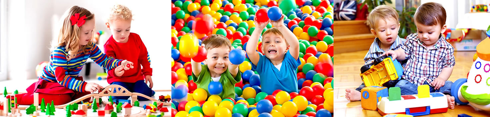

<!DOCTYPE html><html lang="es"><head><meta charset="utf-8"/><meta name="viewport" content="width=device-width, initial-scale=1"/><title>Playgroups</title><meta name="keywords" content="Estancia infantil, guarderia niños, instalaciones, niños, bebes, guarderias, lactantes, maternal, juegos Didacticos, Niñera, after school"><meta name="description" content="Estancia infantil, guarderia niños, instalaciones Para asegurar a tu hijo las instalaciones son la clave una estancia infantil debe contar con las instalaciones adecuadas para los niños, bebes, lactantes, las instalaciones adecuadas conllevan todo tipo de instalaciones, tales como instalaciones de aire, instalaciones de agua,  instalaciones de salones de clases, instalaciones de cocina, instalaciones de juego, instalaciones, instalaciones de oficinas, instalaciones de aseo, instalaciones de cocina, instalaciones de gas"><link rel="canonical" href="http://kokundaycare.com.mx/"><link rel="stylesheet" href="https://cdnjs.cloudflare.com/ajax/libs/bulma/0.5.1/css/bulma.min.css"/><link rel="stylesheet" href="https://maxcdn.bootstrapcdn.com/font-awesome/4.7.0/css/font-awesome.min.css"/><link rel="stylesheet" href="https://cdnjs.cloudflare.com/ajax/libs/slick-carousel/1.7.1/slick.min.css"/><link rel="stylesheet" href="https://cdnjs.cloudflare.com/ajax/libs/slick-carousel/1.7.1/slick-theme.min.css"/><link rel="stylesheet" href="https://cdnjs.cloudflare.com/ajax/libs/fancybox/3.1.20/jquery.fancybox.min.css"/><link rel="stylesheet" href="https://fonts.googleapis.com/css?family=Poppins:300,400,700"/><link rel="stylesheet" type="text/css" href="app/app.css"/><link rel="icon" type="image/png" href="favicon.png"/></head><body><div class="topbar"><div class="columns"><div class="column"><span class="slogan">Guardería en Polanco</span><span class="topbar-text"><a href="tel:68205500"><i class="fa fa-phone"></i><span>+52 (55) 6820 5500</span></a></span><span class="topbar-text"><a href="mailto:info@kokundaycare.com.mx"><i class="fa fa-envelope"></i><span>info@kokundaycare.com.mx</span></a></span></div></div></div><section class="section"><div class="container"><div class="navbar"><div class="navbar-brand"><a href=""></a><div class="navbar-burger" data-target="#mainMenu"><span></span><span></span><span></span></div></div><div class="navbar-menu" id="mainMenu"><nav class="navbar-end"><a class="navbar-item" href="daycare-preschool.html">Nosotros</a><a class="navbar-item" href="guarderia.html">Servicios</a><a class="active navbar-item" href="playgroups.html">Playgroups</a><a class="navbar-item" href="educacion-infantil.html">Educación</a><a class="navbar-item" href="talleres-infantiles.html">Kokun Kids</a><a class="navbar-item" href="cuidado-infantil.html">Contacto</a></nav></div></div></div></section><div class="container"><div class="notification is-orange has-text-centered">PLAYGROUPS / ESTIMULACIÓN TEMPRANA</div></div><section class="section"><div class="container"><div class="columns"><div class="column is-6 is-offset-3"><h2 class="has-text-centered text-purple">¡Los bebés y sus papás aman los Playgroups de Kokun!</h2></div></div><div class="columns"><div class="column is-12"><p>Tú bebé es tan pequeño por tan corto tiempo aprovecha al máximo este tiempo especial en su vida y en la tuya.</p><h4 class="text-green mt mb is-size-5">¿Qué es un Baby Playgroup?</h4><p>Es un grupo de Mamás, Papás y Maestra que se reúnen con sus Bebés cada semana para interactuar (desarrollar competencias como Padres), recibir apoyo (Confianza) y disfrutar mutuamente.</p><h4 class="text-blue mt mb is-size-5 has-text-centered">Competencia + Confianza + Disfrutar Mutuamente + Aprendizaje + Estimulación Temprana</h4><h4 class="text-green mt mb is-size-5">¿Por qué ir a un Baby Playgroup?</h4><p>Los cambios son tan rápidos cuando tu bebé crece y se desarrolla. Las investigaciones recientes indican que los primeros tres años de vida de tu bebé son cruciales para el desarrollo cerebral,su salud y bienestar. Para un desarrollo óptimo un bebé necesita un ambiente que lo estimule a jugar y a aprender. Los Baby Playgroups ofrecen a todos los bebés la oportunidad de jugar y aprender… le ofrece una gran variedad de experiencias de aprendizaje temprano. El playgroup les da a los padres la opotunidad de exponer sus ideas, frustraciones y satisfacciones sobre la crianza de sus bebés. Muchas amistades a largo plazo nacen en estos Playgroups.</p></div></div><div class="columns"><div class="column is-6"><h4 class="text-purple mt mb is-size-5 has-text-centered">En el Playgroup tú bebé:</h4><ul><li>Se divertirá Jugando Contigo</li><li>Disfrutará estar con otros Bebés y Niños Pequeños</li><li>Explorará un Mundo Nuevo repleto de Experiencias Frescas</li><li>Desarrollará una Rutina Semanal</li><li>Experimentará con Diferentes Materiales</li><li>Se Relacionará con otros Adultos</li><li>Aprenderá a Desarrollar Habilidades Nuevas</li><li>Fortalecerá sus Patrones de Movimiento</li></ul></div><div class="column is-6"><h4 class="text-purple mt mb is-size-5 has-text-centered">En el Playgroup tú:</h4><ul><li>Aprenderás ejercicios con tu bebé para mantenerte en forma</li><li>Te llevarás tips muy útiles</li><li>Aprenderás masajes, canciones y técnicas de relajación</li><li>Profundizarás en la etapa de desarrollo que se encuentra tu bebé</li><li>Saldrás de casa</li><li>Platicarás con otros padres</li><li>Harás nuevas amistades</li><li>Compartirás experiencias</li></ul></div></div></div></section><section class="section is-blue"><div class="container"><div class="columns"><div class="column"><h2 class="text-white">Los servicios que Kokun ofrece son</h2></div></div></div><div class="columns mt2"><div class="column is-10 is-offset-1"><div class="columns"><div class="columns"><div class="column is-4"><div class="card kokun-card"><a class="card-image" href="guarderia.html"><figure class="image"><div class="hovertext is-blue"><p class="is-size-3">Day Care</p></div></figure></a><div class="card-content has-text-centered"><p class="is-size-3 text-blue">DayCare</p></div></div></div><div class="column is-4"><div class="card kokun-card"><a class="card-image" href="guarderia.html"><figure class="image"><div class="hovertext is-green"><p class="is-size-3">After School</p></div></figure></a><div class="card-content has-text-centered"><p class="is-size-3 text-green">After School</p></div></div></div><div class="column is-4"><div class="card kokun-card"><a class="card-image" href="guarderia.html"><figure class="image"><div class="hovertext is-purple"><p class="is-size-3">Talleres</p></div></figure></a><div class="card-content has-text-centered"><p class="is-size-3 text-purple">Talleres</p></div></div></div></div></div></div></div></section><section class="section contamoscon is-purple"><div class="container"><div class="columns"><div class="column is-6 is-offset-3"><h2 class="has-text-centered text-white">Contamos con</h2></div></div><div class="columns is-multiline"><div class="column is-3 has-text-centered"><p>Paramédico</p></div><div class="column is-3 has-text-centered"><p>Seguro de AP Escolares</p></div><div class="column is-3 has-text-centered"><p>Programas inclusivos</p></div><div class="column is-3 has-text-centered"><p>Nutrición</p></div><div class="column is-3 has-text-centered"><p>Escuela para padres</p></div><div class="column is-3 has-text-centered"><p>Psicóloga</p></div><div class="column is-3 has-text-centered"><p>Playgroups</p></div><div class="column is-3 has-text-centered"><p>Evaluación trimestral</p></div></div></div></section><div class="is-purple"><div class="container"><div class="columns"><div class="column is-6 is-offset-3"><h2 class="has-text-centered text-white mt2 mb2">55 33 75 10  y  55 33 86 61</h2></div></div></div></div><footer class="footer"><div class="container"><div class="columns"><div class="column is-4"><h5 class="is-size-4 text-blue">Sucursal Reforma</h5><p>Río Rhin No. 47, Col Cuahutémoc, <br> CP 06500, Ciudad de México, CDMX. <br>Tel. 55 33 75 10 y 55 33 86 61</p></div><div class="column is-4"><h5 class="is-size-4 text-blue">Sucursal Polanco</h5><p>Calle Julio Verne 18, Polanco V Sec, <br> CP 11560 Ciudad de México, CDMX. <br> Tel. 5280 7514 </p></div><div class="column is-4"><h5 class="is-size-4 text-blue">Contacto</h5><div class="level"><div class="level-item"><a class="fa fa-facebook is-green" href="https://www.facebook.com/KokunDayCare/" target="_blank"></a></div><div class="level-item"><a class="fa fa-twitter is-green" href="https://twitter.com/kokundaycare" target="_blank"></a></div><div class="level-item"><a class="fa fa-google-plus is-green" href="https://plus.google.com/102833441639096713965" target="_blank"></a></div></div></div></div></div></footer><script src="https://cdnjs.cloudflare.com/ajax/libs/jquery/3.2.1/jquery.min.js"></script><script src="https://cdnjs.cloudflare.com/ajax/libs/slick-carousel/1.7.1/slick.min.js"></script><script src="https://cdnjs.cloudflare.com/ajax/libs/fancybox/3.1.20/jquery.fancybox.min.js"></script><script src="app/app.js"></script><script src="http://livejs.com/live.js"></script></body></html>